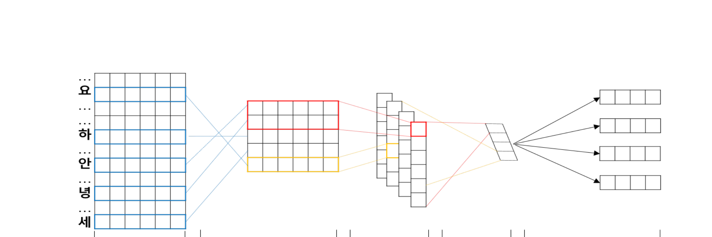

A Syllable-based Technique for Word Embeddings of Korean Words
The 1st Workshop on Subword and Character Level Models in NLP (SCLeM 2017) at EMNLP 2017
Sanghyuk Choi, Taeuk Kim, Jinseok Seol, Sang-goo Lee
한줄 요약
한국어 음절을 기본 임베딩 단위로 사용하는 CNN 기반 단어 표현 모델로, 형태론적으로 의미 있는 단어 벡터를 생성하며 미등록어(OOV)에 강건하고 한국어의 교착어 구조를 포착합니다.

Figure 1. 합성곱 및 맥스 풀링 레이어를 갖춘 음절 기반 단어 임베딩 모델. 각 단어를 구성 음절로 분해하고, 임베딩한 뒤, 다양한 너비의 합성곱 필터와 맥스 풀링을 거쳐 고정 차원의 단어 벡터를 생성합니다.
배경 및 동기
워드 임베딩은 개체명 인식, 기계 번역, 감성 분석 등 다양한 NLP 과제의 기반 요소로 자리잡았습니다. Word2Vec(Skip-gram, CBOW)과 GloVe 같은 표준 모델은 각 단어를 원자적 단위로 취급하여 하나의 벡터로 매핑합니다. 형태 변화가 적은 언어에서는 이 방식이 비교적 잘 작동하지만, 형태론적으로 풍부하고 교착어적 특성을 가진 한국어에서는 심각한 문제를 야기합니다.
한국어 어휘 폭발 문제: 한국어에서는 하나의 어근 형태소가 약 60개의 다른 접사(조사, 어미, 존칭 등)와 결합하여 각각 다른 표면 형태를 만들어냅니다. 예를 들어, 명사 "학교"는 "학교가", "학교를", "학교에서", "학교에서의" 등 수십 가지 형태로 나타날 수 있습니다. 전통적인 단어 수준 임베딩은 이들을 각각 완전히 별개의 어휘 항목으로 취급하여, 거대한 어휘 크기, 단어당 희소한 학습 데이터, 빈번한 미등록어(OOV) 실패를 초래합니다.
기존의 하위단어 접근법은 부분적인 해결책을 제시하지만 한국어에 대해 상당한 한계를 가지고 있습니다:
문자(자모) 수준 모델: 한국어 자모(ㄱ, ㅏ, ㄴ 등)는 너무 세밀한 단위로, 개별 자모는 그 자체로 의미를 거의 갖지 않아 조합이 어렵고 유용한 정보가 손실됩니다.
형태소 수준 모델: 전처리 단계로 형태소 분석기가 필요하며, 이는 분절 오류를 발생시켜 임베딩으로 전파됩니다. 한국어 형태소 분석은 여전히 불완전하고 자원 집약적인 과제입니다.
음절 수준 모델 (본 연구): 한국어 음절은 최적의 지점에 위치합니다 -- 자연스럽게 의미를 담고 있고(예: "대학" = "大學", "대"는 "큰", "학"은 "배움"), 전처리 도구가 필요 없으며, 음절을 공유하는 단어는 의미를 공유하는 경우가 많습니다.
핵심 통찰은 한글의 음절 블록이 언어학적으로 의미 있는 단위로서, 지나치게 세밀한 문자 수준과 지나치게 거친 단어 수준 사이에 존재한다는 것입니다. 또한 실제 사용되는 고유 음절 수는 약 1,000개에 불과하여, 단어 어휘(11,000개 이상)보다 훨씬 작으므로 음절 수준 표현은 의미적으로 풍부하면서도 계산적으로 효율적입니다.
제안 방법: Syllable-CNN
합성곱 신경망을 통해 학습된 음절 벡터를 조합하여 단어 표현을 구성합니다. 본 아키텍처는 문자 수준 CNN 모델(Kim et al., 2016의 CharCNN 등)의 통찰을 바탕으로, 한국어의 음절 기반 문자 체계에 맞게 적용하였습니다:
1
음절 임베딩 레이어
각 한국어 음절을 학습 가능한 임베딩 행렬을 통해 d차원 밀집 벡터로 매핑합니다. n개 음절(s1, s2, ..., sn)로 구성된 단어가 주어지면, 해당 음절 벡터를 순서대로 연결하여 합성곱 레이어의 입력이 되는 n × d 행렬을 형성합니다. 코퍼스 내 고유 음절이 ~1,000개에 불과하므로 이 임베딩 테이블은 소형이면서도 표현력이 우수합니다.
2
다중 너비 합성곱 레이어
음절 임베딩 행렬 위에 너비 1, 2, 3, 4의 다양한 1D 합성곱 필터를 적용합니다. 너비-1 필터는 개별 음절 특징을, 너비-2 필터는 이음절 패턴(한자어 합성어에 흔함)을, 너비-3과 너비-4 필터는 더 긴 조합 패턴을 감지합니다. 각 너비당 80개의 필터를 사용하여 너비별 80차원 특징 맵을 생성합니다. 이후 max-over-time 풀링으로 각 필터에서 가장 활성화된 특징을 선택하여, 단어 길이에 관계없이 320차원(80 × 4 너비)의 고정 길이 벡터를 출력합니다.
3
Skip-gram 공동 학습
음절 임베딩, 합성곱 필터, 풀링을 포함한 전체 모델이 네거티브 샘플링(k=5)을 사용한 Skip-gram 목적 함수로 종단간(end-to-end) 학습됩니다. 대상 단어가 주어지면 CNN이 음절 벡터를 단어 수준 표현으로 조합하고, 이를 고정 윈도우 내의 주변 문맥 단어를 예측하는 데 사용합니다. CNN을 통한 역전파가 합성곱 파라미터와 음절 임베딩 테이블을 공동으로 갱신하여, 단어 수준 분포 의미론에 최적화된 음절 표현을 학습합니다.
핵심 아키텍처 장점: 단어 표현이 고정된 룩업 테이블이 아닌 음절 벡터로부터 계산되기 때문에, 모델은 알려진 음절로 구성된 모든 단어에 대해 임베딩을 생성할 수 있습니다 -- 학습 중 한 번도 본 적 없는 단어도 포함합니다. 이러한 조합적 특성이 한국어에서 단어 수준 모델을 괴롭히는 OOV 문제를 직접적으로 해결합니다.
실험 결과
2012-2014년 한국어 뉴스 코퍼스에서 평가하였습니다. 약 270만 토큰, 11,000개 단어 어휘, ~1,000개 고유 음절을 포함하며, 단어 벡터 차원은 320(80 필터 × 4 너비)으로 설정하였습니다. 베이스라인은 동일 코퍼스에서 학습한 표준 Skip-gram 모델입니다.
단어 유사도 평가
모델
피어슨 상관계수 (WS353-Sim)
Skip-gram (베이스라인)
0.583
Syllable-CNN (제안 모델)
0.634
한국어로 번역된 WordSim-353 유사도 부분집합에서 Syllable-CNN은 Skip-gram 베이스라인 대비 +0.051의 피어슨 상관 향상을 달성하였습니다. 이 향상은 의미적으로 관련된 단어 간 공유 음절을 활용하는 모델의 능력에 기인합니다 -- 예를 들어, "경제"(economy)와 "경영"(management)은 음절 "경"(다스릴 경)을 공유하며, CNN이 조합 과정에서 이를 포착합니다.
OOV 강건성: 미등록어 처리
음절 기반 접근법의 핵심 장점은 미등록어에 대해서도 의미 있는 임베딩을 생성할 수 있다는 것입니다. 논문에서는 학습 데이터에 없는 신조어와 합성어로 이를 입증합니다:
OOV 질의어
최근접 이웃 (Syllable-CNN)
구글신 ("God Google")
구글 (Google) 및 의미적으로 관련된 단어들
갤노트 ("갤럭시 노트" 축약)
갤럭시 (Galaxy), 노트 (Note) 및 관련 기술 용어들
이러한 OOV 단어들은 기존 단어와 음절을 공유하므로(예: "구글신"은 "구글" = Google을 포함), CNN이 음절 벡터를 조합하여 예상되는 의미적 이웃에 가까운 표현을 만들어냅니다. 표준 Skip-gram 모델은 이러한 단어에 대해 벡터를 전혀 생성할 수 없습니다.
형태론적 구조 분석
평행 클러스터 형성: 단어 벡터의 PCA 시각화에서 Syllable-CNN은 기본 명사와 조사 결합 형태 사이에 구별적인 평행 클러스터를 형성합니다(예: "한국" vs. "한국이", "한국을", "한국에"). 기본형과 활용형 사이의 일관된 방향성 오프셋은 모델이 단순한 암기가 아닌 체계적인 형태론적 변환을 학습했음을 보여줍니다.
베이스라인의 실패: 표준 Skip-gram 모델은 이러한 형태론적 구조를 포착하지 못합니다 -- 기본 단어와 활용형이 명확한 기하학적 관계 없이 흩어져 있어, 단어 수준 모델이 각 표면형을 독립적으로 취급함을 확인합니다.
파라미터 효율성: 음절 어휘(~1K 항목)는 단어 어휘(~11K 항목)보다 10배 이상 작아, 동등하거나 더 나은 커버리지를 위해 훨씬 적은 파라미터를 필요로 합니다. 이는 학습 데이터가 제한된 저자원 환경에서 특히 유리합니다.
전처리 불필요: 형태소 분석기에 의존하여 파이프라인 오류를 유발하는 형태소 기반 모델과 달리, 음절 기반 접근법은 단순한 음절 토큰화만으로 원시 텍스트에서 직접 작동합니다 -- 한국어에서 결정론적이고 오류 없는 과정입니다.
의의
본 연구는 한국어 단어 표현의 기본 단위로 음절을 사용하는 것을 개척하여, 문자 수준 및 형태소 수준 접근법에 대한 언어학적으로 동기가 부여된 대안을 제시하였습니다. 그 기여는 여러 방향으로 확장됩니다:
실용적 한국어 NLP 기반: 형태소 분석기 없이도 한국어의 교착어 특성을 자연스럽게 포착함으로써, 개체명 인식, 구문 분석, 기계 번역 등 하위 한국어 NLP 과제를 위한 견고하고 경량의 기반 요소를 제공합니다.
OOV 문제 완화: 모델의 조합적 특성은 알려진 음절로 구성된 모든 단어가 의미 있는 임베딩을 받을 수 있음을 의미합니다 -- 한국어 웹 텍스트와 소셜 미디어에서 끊임없이 등장하는 신조어, 축약어, 합성어를 처리하는 데 필수적입니다.
하위단어 표현에 대한 통찰: 최적의 하위단어 세분화 수준이 언어에 따라 다름을 보여줍니다. 알파벳 기반 언어에서는 문자 수준 접근이 잘 작동하지만, 한국어의 고유한 음절 블록 문자 체계(한글)는 더 의미적으로 유익한 중간 표현을 제공합니다. 이 통찰은 이후 한국어 언어 모델 연구에 영향을 미쳤습니다.
효율적이고 확장 가능: 11,000개 이상의 단어 임베딩 대신 ~1,000개의 음절 임베딩만 학습하면 되므로, 자원이 제한된 환경에서의 배포에 적합한 파라미터 효율적 모델입니다.